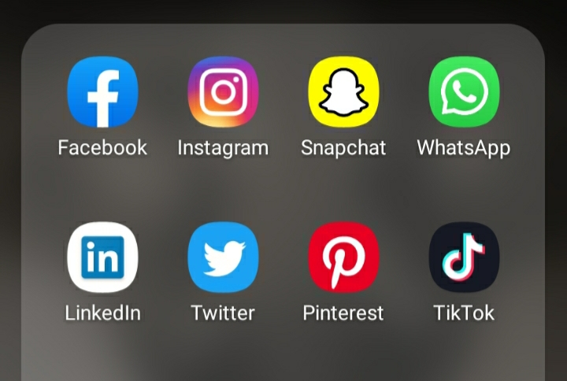

... Et Gagnez de Nouveaux Clients.
Comment ? En utilisant les réseaux sociaux.
Car aujourd'hui les réseaux sociaux sont un lieu incontournable pour promouvoir vos produits et services.
Vous ne le savez peut-être pas, mais adopter une bonne Stratégie Marketing sur les réseaux sociaux vous permet d'accroître considérablement vos résultats.
C'est pourquoi aujourd'hui nous vous proposons de mettre en place la meilleure Stratégie Marketing pour votre business.

Nous travaillons principalement avec les réseaux sociaux qui sont les leviers les plus puissants pour booster votre business.
Avoir de nouveaux Clients c'est bien mais les fidéliser c'est encore mieux !
Maintenant, posez-vous la question :
Voulez-vous décupler votre nombre de client tout en consolidant votre image de marque ?
Prenez donc contact avec nous pour redonner un élan de croissance et de visibilité dès maintenant à votre business !